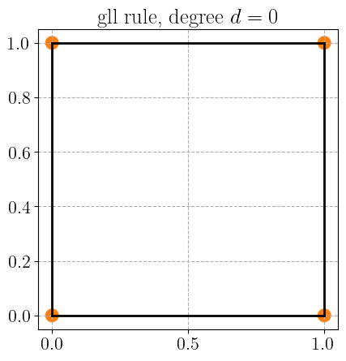

Quadrature schemes#
Objectives
This code snippet shows the location of the quadrature points for different degrees, cell types and quadrature rules both in 2D and 3D.
Download sources
2D Quadrature rule#
import matplotlib.pyplot as plt
import numpy as np
import basix
from basix import CellType, QuadratureType
all_cell_types = [CellType.triangle, CellType.quadrilateral]
degrees = range(5)
quad_rules = {
QuadratureType.Default: (degrees, all_cell_types),
QuadratureType.gauss_jacobi: (degrees, all_cell_types),
QuadratureType.gll: (degrees, [CellType.quadrilateral]),
QuadratureType.xiao_gimbutas: (degrees[1:], [CellType.triangle]),
}
Show code cell source
def plot_quad_points_2D(rule, cell_type, deg, color, ax):
points, weights = basix.make_quadrature(cell_type, deg, rule=rule)
vertices = basix.geometry(cell_type)
facets = basix.cell.sub_entity_connectivity(cell_type)[1]
for f in facets:
vert = vertices[f[0], :]
ax.plot(vert[:, 0], vert[:, 1], "k")
ax.scatter(points[:, 0], points[:, 1], 500 * weights, color=color)
ax.set_aspect("equal")
def plot_quadrature_rule_2D(rule, color="C0"):
degs, cell_types = quad_rules[rule]
for deg in degs:
plt.figure()
for i, cell_type in enumerate(cell_types):
no_subplot = len(cell_types) < 2
if no_subplot:
ax = plt.gca()
else:
ax = plt.subplot(1, 2, i + 1)
ax.margins(0.05)
plot_quad_points_2D(rule, cell_type, deg, color, ax)
if no_subplot:
plt.title(f"{rule.name} rule, degree $d={deg}$")
else:
plt.suptitle(f"{rule.name} rule, degree $d={deg}$", y=0.8)
plt.show()
Default quadrature rule#
plot_quadrature_rule_2D(QuadratureType.Default, color="C3")
Gauss-Jacobi quadrature rule#
plot_quadrature_rule_2D(QuadratureType.gauss_jacobi, color="C2")

Gauss-Legendre-Lobatto quadrature rule#
plot_quadrature_rule_2D(QuadratureType.gll, color="C1")


Xiao-Gimbutas quadrature rule#
plot_quadrature_rule_2D(QuadratureType.xiao_gimbutas, color="C0")

3D rules#
cell_type = CellType.hexahedron
dim = 3
deg = 2
from dolfinx import cpp, mesh
import pyvista as pv
from matplotlib.colors import to_hex
pv.set_jupyter_backend("static")
all_cell_types = [CellType.tetrahedron, CellType.hexahedron]
degrees = range(5)
quad_rules = {
QuadratureType.Default: (degrees, all_cell_types),
QuadratureType.gauss_jacobi: (degrees, all_cell_types),
QuadratureType.gll: (degrees, [CellType.hexahedron]),
QuadratureType.xiao_gimbutas: (degrees[1:], [CellType.tetrahedron]),
}
Show code cell source
def plot_quad_points_3D(rule, cell_type, deg, color, plotter):
points, weights = basix.make_quadrature(cell_type, deg, rule=rule)
vertices = basix.geometry(cell_type)
facets = basix.cell.sub_entity_connectivity(cell_type)
num_nodes_per_cell = len(facets[dim - 1][0][0])
subentity_cell_type = {
CellType.tetrahedron: mesh.CellType.triangle,
CellType.hexahedron: mesh.CellType.quadrilateral,
}
map_vtk = np.argsort(
cpp.io.perm_vtk(subentity_cell_type[cell_type], num_nodes_per_cell)
)
faces = [[f[0][m] for m in map_vtk] for f in facets[dim - 1]]
cell = pv.PolyData.from_regular_faces(vertices, faces)
# Add the mesh to the plotter
plotter.add_mesh(cell, color="gray", opacity=0.4, show_edges=True)
point_cloud = pv.PolyData(points)
point_cloud["weights"] = np.abs(weights) ** 0.33 * 0.25
glyphs = point_cloud.glyph(scale="weights", geom=pv.Sphere(), orient=False)
plotter.add_mesh(glyphs, color=to_hex(color))
plotter.camera.azimuth = 10.0
plotter.camera.elevation = -30.0
def plot_quadrature_rule_3D(rule, color="C0"):
degs, cell_types = quad_rules[rule]
for deg in degs:
for i, cell_type in enumerate(cell_types):
no_subplot = len(cell_types) < 2
# Create a PyVista plotter
if no_subplot:
plotter = pv.Plotter()
plotter.window_size = (400, 400)
plotter.add_title(rf"{rule.name} rule, degree d={deg}", font_size=10)
else:
if i == 0:
plotter = pv.Plotter(shape=(1, 2))
plotter.window_size = (800, 400)
plotter.subplot(0, i)
plotter.add_title(rf"{rule.name} rule, degree d={deg}", font_size=10)
plot_quad_points_3D(rule, cell_type, deg, color, plotter)
plotter.show()
Default quadrature rule#
plot_quadrature_rule_3D(QuadratureType.Default, "C3")
Gauss-Jacobi quadrature rule#
plot_quadrature_rule_3D(QuadratureType.gauss_jacobi, "C2")
Gauss-Legendre-Lobatto quadrature rule#
plot_quadrature_rule_3D(QuadratureType.gll, "C1")

Xiao-Gimbutas quadrature rule#
plot_quadrature_rule_3D(QuadratureType.xiao_gimbutas, "C0")